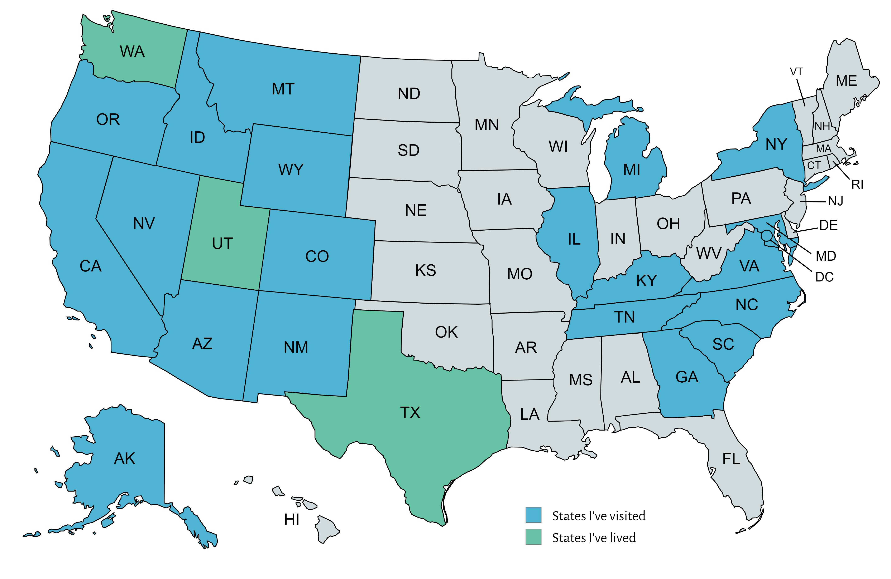

I am an applied scientist at amazon science working on rufus, the next generation LLM-based conversational shopping assistant.
I earned my Ph.D. in computer science from the University of Utah — the birthplace of computer graphics and the embryo of the current worldwide internet (ARPANET). I was fortunate to be mentored by Dr. Sarang Joshi with affiliations to the Scientific Computing and Imaging Institute and Kahlert School of Computing. I also work closely with researchers from FSU, UCLA, UVA, and Yale.
Before I joined the U, I received my B.Eng. in computer science from Tongji University and have studied at Israel Institute of Technology and Institut de Mathématiques de Toulouse as an exchange student, focusing on image analysis and riemannian geometry, respectively.
Currently, I am passionate about developing specialized and trustworthy machine learning tools. My research extends to, but is not limited to: üìÑlarge language models and retrieval-augmented generation; ü뮂Äç‚öñÔ∏ètrustworthy machine learning (fairness and robustness); üëÅÔ∏èvision language and diffusion models; üìêgeometric deep learning and shape modeling; and üî≠physics-informed machine learning.
Publications & Preprints
[*=equal contribution]


Integrated Construction of Multimodal Atlases with Structural Connectomes in the Space of Riemannian Metrics.
- Kris Campbell, Haocheng Dai, Zhe Su, Martin Bauer, Tom Fletcher, Sarang Joshi.
- Machine Learning for Biomedical Imaging (MELBA), 2022 üßë‚Äç‚öïÔ∏èüìê / Paper / Code / Citation


Services
I have served as a reviewer for several journals and conferences, including ACM MM, AISTATS, ACM TIST, CVPR, ARO, ICCV, ICLR, ICML, IEEE TNNLS, MedIA, MELBA, MICCAI, MIDL, NeurIPS, Scientific Reports, TMLR, AI for Differential Equations in Science@ICLR, and WiCV@ECCV.
Miscellaneous
I made a handful of notes for better understanding in language models, machine learning, mathematics of imaging, metric estimation, image registration, and solving large systems of linear equations.
My erdős number = 4:
Haocheng Dai -> Sarang Joshi -> Ulf Grenander -> Oved Shisha -> Paul Erdős;
Haocheng Dai -> Mike Kirby -> Frank Stenger -> Ambikeshwar Sharma -> Paul Erdős.
I am an amateur photographer, vlogger and also a loyal reader of üì∞ newspapers, you can find the highlight front pages of the New York Times I collect by the years of 2012, 2013, 2014, 2015, 2016, 2017, 2018, 2019, 2020, 2021, 2022, 2023, and 2024; the highlight front pages of the Washington Post I collect before 2015, 2016 - 2020, and 2021 - 2024.
I also write some random blog posts: Navigating the Paradoxes of Existence.
Footprints
